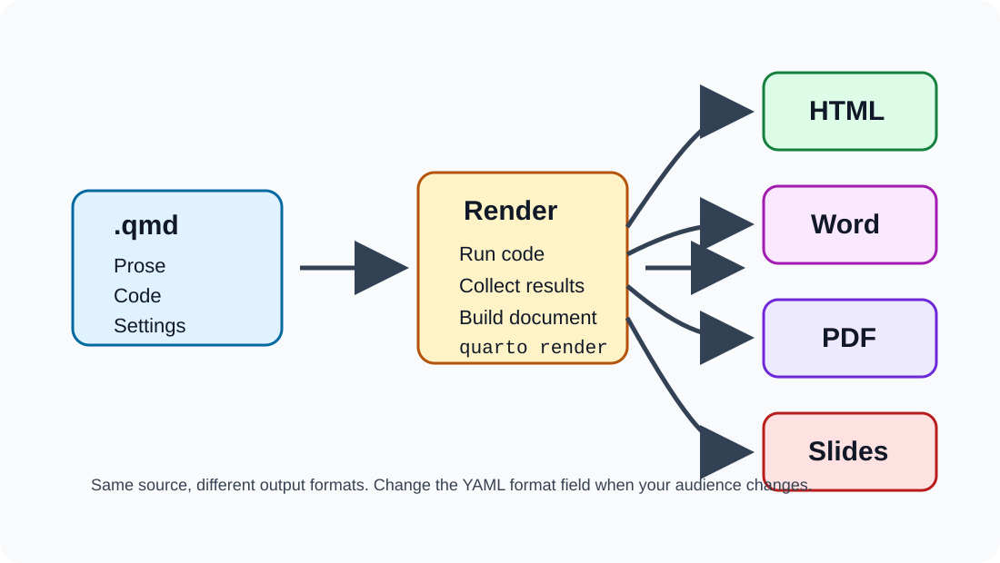
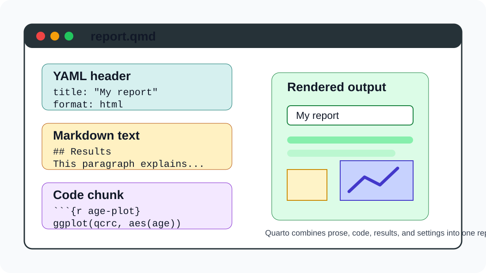
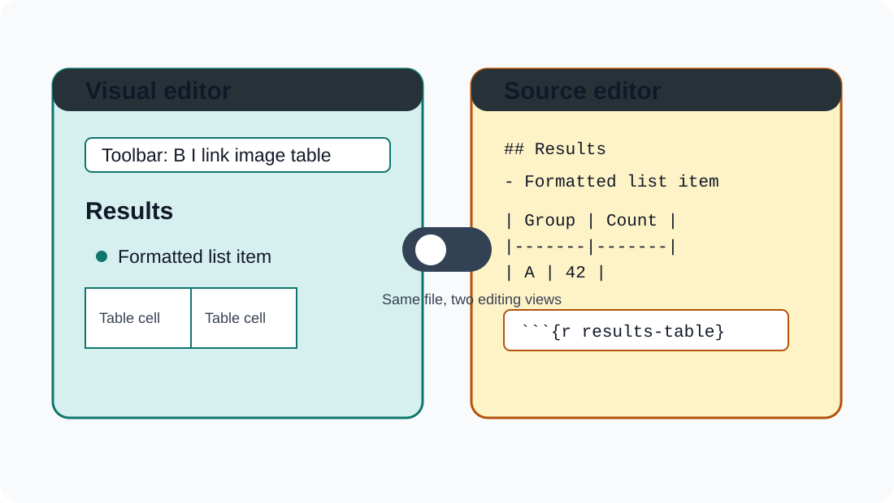
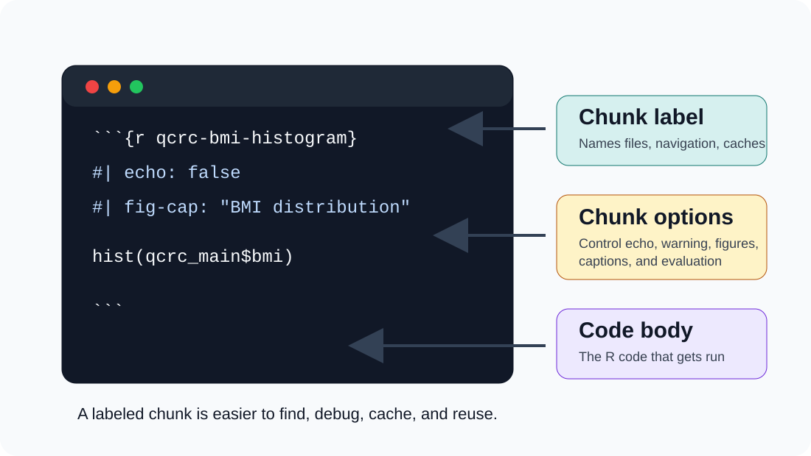

Learning objectives
By the end of this module, you should be able to:
- Explain what a Quarto document contains.
- Create and render a basic
.qmd file.
- Add text, code chunks, chunk labels, options, figures, and tables.
- Use Visual and Source editor modes intentionally.
What Quarto does
Quarto turns one source document into a finished output.

A schematic showing a Quarto document flowing through render into HTML, Word, PDF, and slides.
Why use Quarto?
- Reproducible work: code and conclusions live together.
- Communication: readers can focus on results, not just scripts.
- Collaboration: future you can see exactly how the output was made.
- Flexibility: the same source can become HTML, Word, PDF, or slides.
Where to find help
- Main documentation: https://quarto.org/
- In RStudio: Help > Markdown Quick Reference
- In your own document: render early, render often, and read the first error carefully.
Quarto document anatomy

A schematic Quarto file with YAML, Markdown prose, an R code chunk, and rendered output.
Quarto basics
Quarto files have a .qmd extension.
They usually contain three things:
- A YAML header between
--- lines.
- Markdown text for prose and formatting.
- Code chunks for analysis, tables, and figures.
Getting started
In RStudio or Positron:
- Choose File > New File > Quarto Document…
- Start with HTML output for the first few examples.
- Click Render after each small change.
HTML renders quickly and makes it easy to see what changed.
Editor modes

A side-by-side schematic comparing Quarto Visual editor mode with Source editor mode.
Visual editor
- Shows formatted headings, lists, tables, links, and images while you edit.
- Lets you insert common elements from menus and toolbar buttons.
- Still saves plain Markdown underneath, so the file remains portable.
Source editor
- Shows the raw Markdown and code.
- Feels closer to writing an R script or R Markdown document.
- Helps when you need to debug Quarto syntax.
Source editor: common Markdown
## Results
This is **bold** text and this is `code`.
- first item
- second item
[Quarto documentation](https://quarto.org/)
Running code in Quarto
- Run one chunk with the green arrow on that chunk.
- Run the whole report with Render.
- Use the gear next to Render to choose where chunk output appears.
- If render fails, fix the first error before moving on.
Code chunks
To insert an R chunk:
- Use Insert > Code Chunk.
- Or use the shortcut Ctrl + Alt + I on Windows/Linux.
- Or use Cmd + Option + I on macOS.
Chunk labels and options

A schematic R code chunk showing a chunk label, chunk options, and the code body.
Chunk labels
A useful label is short, unique, and descriptive.
{r qcrc-bmi-histogram}
hist(qcrc_main$bmi)
Prefer dashes or plain words. Avoid spaces and special characters.
Why labels help
Chunk labels make it easier to:
- Jump to a specific chunk in the editor.
- Find generated figure files later.
- Cache expensive chunks.
- Debug render errors.
Never duplicate a chunk label in the same document.
Chunk options
Chunk options begin with #| inside the chunk.
{r qcrc-bmi-histogram}
#| echo: false
#| warning: false
#| fig-cap: "BMI distribution in the QCRC sample"
hist(qcrc_main$bmi)
Common chunk options
eval: false: show code without running it.echo: false: run code but hide it in the output.message: false: hide messages.warning: false: hide warnings.error: true: keep rendering after an error.
Use error: true sparingly in final reports.
Inline code
Inline code places a result directly into a sentence.
The data frame iris has `r nrow(iris)` rows.
Rendered result:
The data frame iris has 150 rows.
Tables
Quarto reports can include:
- Markdown tables you type directly.
- Tables generated by R code.
- Styled tables from packages such as
gt or gtsummary.
We will return to tables later in the course.
First-report habit
When writing a Quarto report:
- Start small.
- Render after each meaningful change.
- Label chunks as you create them.
- Keep prose, code, and conclusions close together.